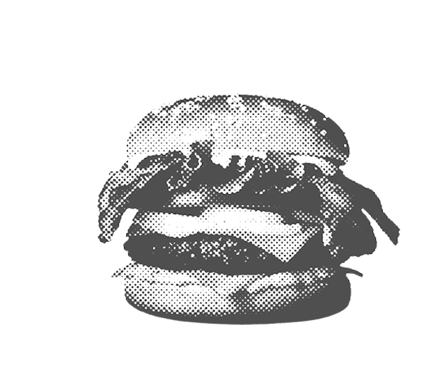
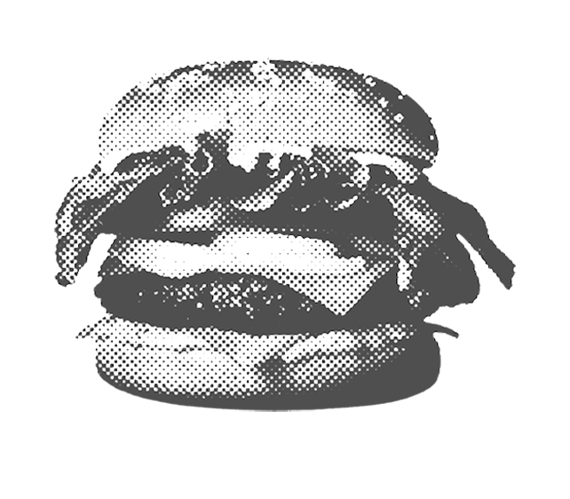
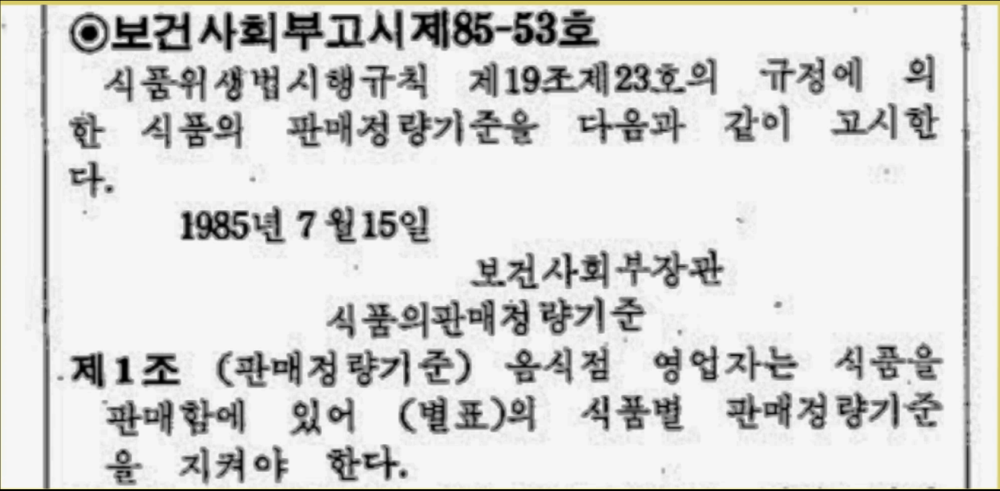
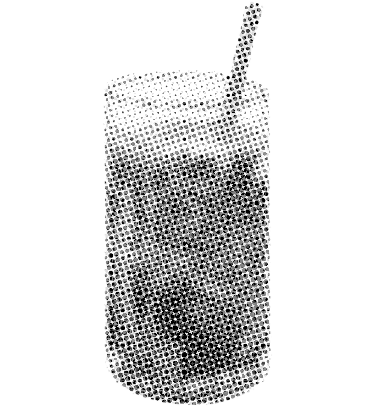

커피는 왜 톨(Tall)이 기본일까? 예전에 1인분이 기본이었던 떡볶이도
2-3인분이 기본이 되었다. 언제부터 그렇게 늘어난걸까?
엽떡을 필두로 한 여러 떡볶이 브랜드는 물론 교촌, BBQ 등 치킨브랜드들도
한 사람이 적당히 먹을 수 있는 양을 팔지 않는다. 코로나 이후 급격히 부상한 배달 앱들 역시 상황은 다르지 않다. 사람들은 최저 주문 금액을 위한 의미없는 사이드 메뉴들을 추가한다.
치킨, 떡볶이, 커피 — 메뉴는 그대로인데, 양은 두 배가 되었다.
진짜 ‘1인분’은 어디로 간걸까?

1985년 7월 15일 보건사회부는 음식점에서 판매하는 음식의 양을 법으로 정했다. 이것을 식품의 판매 정량 기준이라고 불렀다.
어떤 식당을 가든 같은 음식을 먹는다면 1인분의 양은 동일했다. 하지만 1993년 환경 보호를 명목으로 법이 폐지된 이후 음식점에서 자유롭게 1인분을 정할 수 있게 되었다.
성인이 하루에 섭취하는 칼로리는 2000-2500kcal가 권장량이다.
실제로 우리가 섭취하는 칼로리는 어떨까? 맥도날드에서 파는 빅맥 라지 세트 하나의 칼로리는 무려 1000kcal를 넘는다. 햄버거 세트 하나에 하루치 칼로리 섭취량의 반이 사라진다. 이뿐만이 아니다. 카페에서 파는 코코넛 커피 스무디 하나의 칼로리가 747kcal다. 밥 한끼를 마시는 셈이다. 햄버거 세트와 카페에서 마시는 스무디만으로 하루치 권장량이 우습게 찬다. 이처럼 식품 산업은 우리에게 필요 이상의 칼로리를 섭취하도록 만든다. 든든한 한 끼, 든든한 간식 같은 말은 언뜻 듣기엔 좋아보일지 몰라도 꽤나 위험한 말이다. 알게 모르게 우리는 과도하게 음식을 먹고 있다.



1인분이 점점 늘어나는 것을 말하는 용어다. 1인분 단위가 점점 커진건 단순한 식습관 변화가 아니다. 1970년대 이후 외식 산업은 ‘조금 더 큰 사이즈를 같은 값에’라는 전략으로 성장했다. 우리나라의 슈링크플레이션(Shrinkflation)과는 반대로 양을 늘리고 가격을 유지하는 정책으로 소비자에게 경제적 이득을 어필하는 전략을 취한 것이다. 이 전략은 대단히 성공적이었다. 가성비는 모두가 사랑하는 단어였음을 제대로 증명한 것이다.
